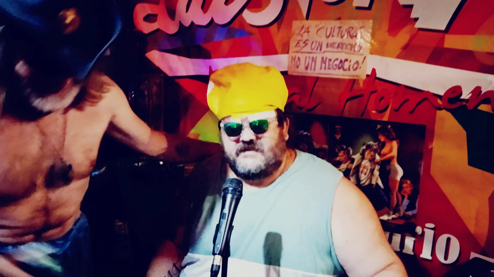
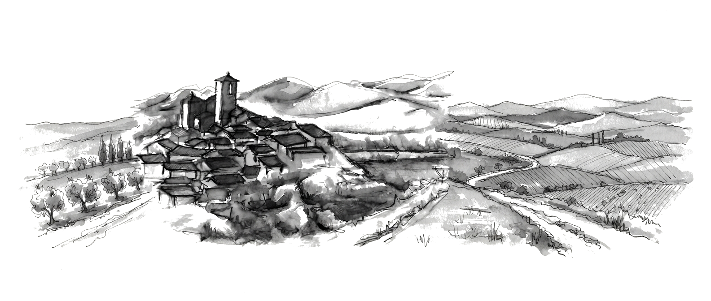
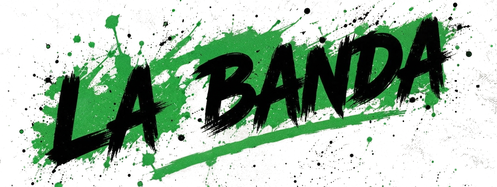
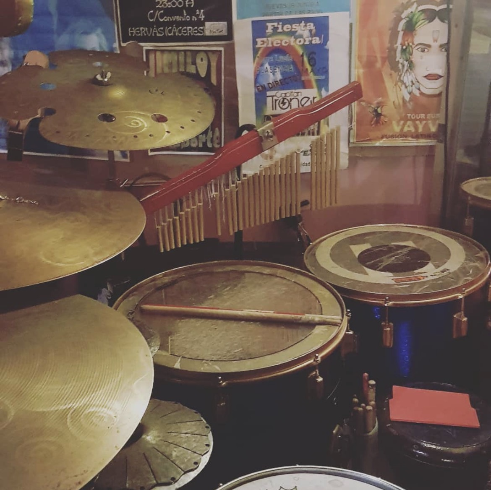
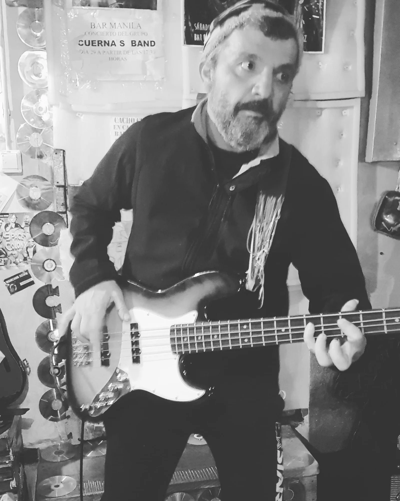
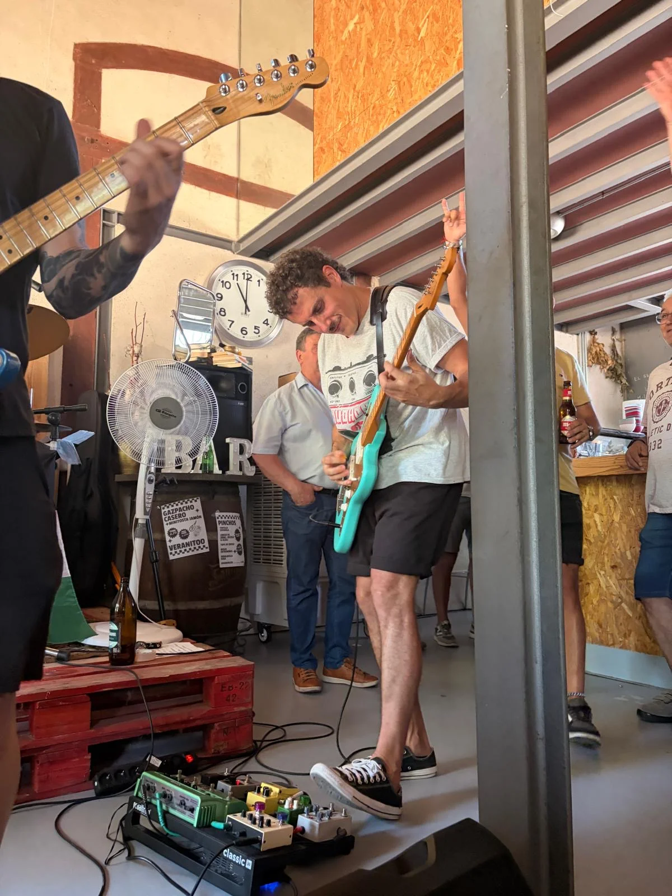
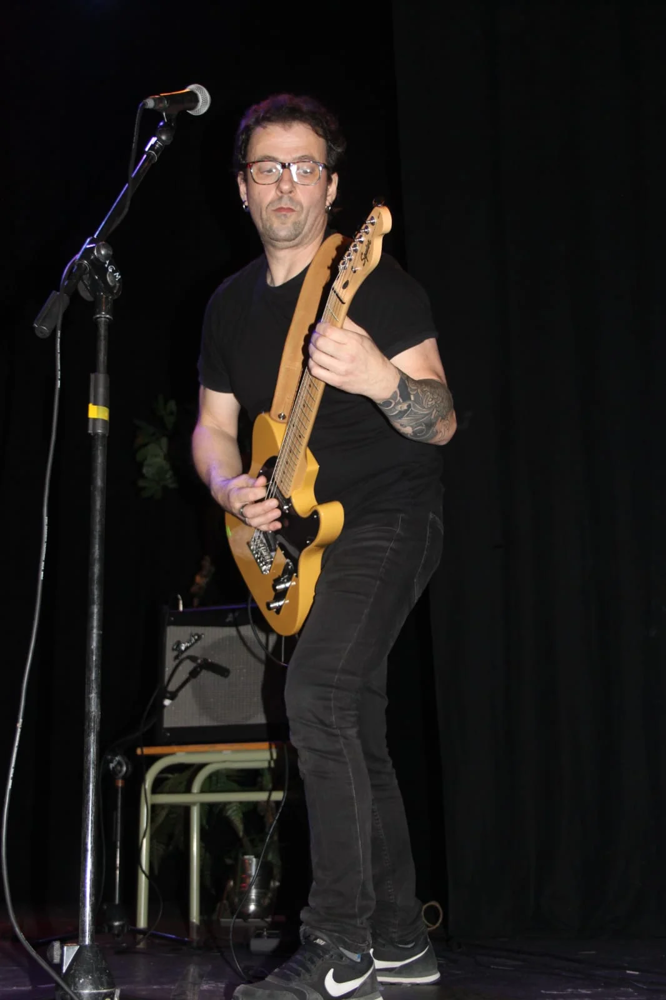
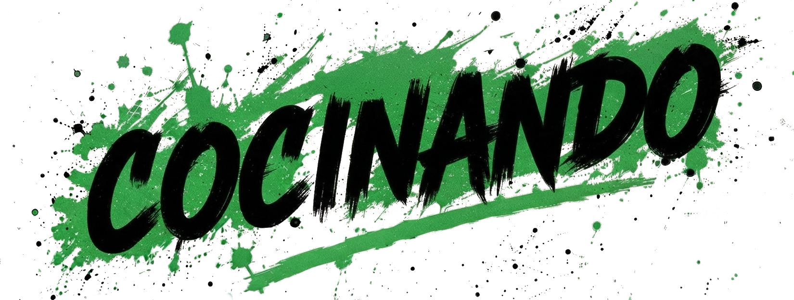
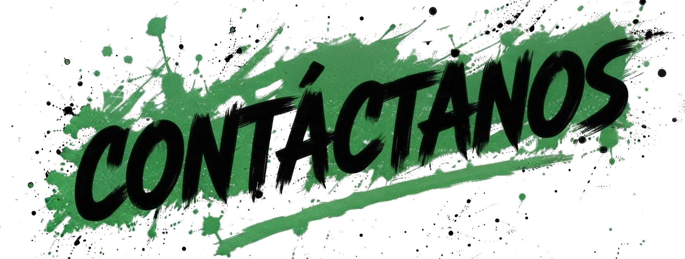

01
USE
VOZ / ORGANIZACIÓN DEL CAOS
Dice que canta para aclararse las ideas. Nadie le ha visto aclararse nada, pero cuando abre la boca la sala entera lo entiende.


ROCK ⚡ PUNK DEL BUENO O LO QUE SALGA...
Desde Hervás (Cáceres) Cinco tipos y una misión: hacer ruido hasta que alguien se pregunte por qué.
Ver fechas ↗LOS SOSPECHOSOS HABITUALES

Cinco maneras de entender el ruido. Una sola banda para ponerlas de acuerdo.

VOZ / ORGANIZACIÓN DEL CAOS
Dice que canta para aclararse las ideas. Nadie le ha visto aclararse nada, pero cuando abre la boca la sala entera lo entiende.

BATERÍA / MOTOR DIESEL
Aprendió a llevar el ritmo golpeando cualquier cosa que hiciera ruido. La batería fue la última en caer.

BAJO / FRECUENCIA SUBTERRÁNEA
Habla poco, toca grave y sabe exactamente dónde esconder una línea de bajo que luego no puedes sacarte de la cabeza.

GUITARRA / DISTORSIÓN MUNICIPAL
Su guitarra tiene más opiniones que él. Las dos suelen tener razón y ninguna piensa pedir permiso.

GUITARRA / COROS / PLAN B
Llega con una guitarra, se va con tres ideas y deja un coro pegado en la pared. A veces también en la cabeza.
DONDE HAYA UN ENCHUFE
Hervás · 19:30 h
Puerto de Béjar · Hora sin confirmar
TRABAJANDO EN ALGO

EL PRÓXIMO DISCO
ESTÁ EN EL HORNO.
Comenzamos un procesos de grabación de nuestro EP con José-María Cano y Fernando Montoya. Después vendrán la mezcla, la masterización y ese momento en que decidamos que ya está listo para tí.
Muy pronto, ya estamos preparando todos los cacharros
Después, con calma relativa
Cuando suene como debe
Fecha por anunciar
PARA CONTRATACIÓN, PRENSA O LO QUE SEA

¿QUIERES
LIARNOS?
Chuflos Verdes es una banda de rock de Hervás (Cáceres). Para conciertos, prensa, colaboraciones o mensajes que no sepan muy bien dónde acabar, escríbenos.